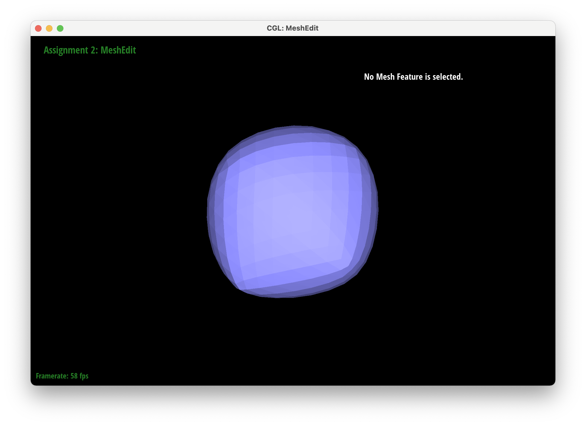
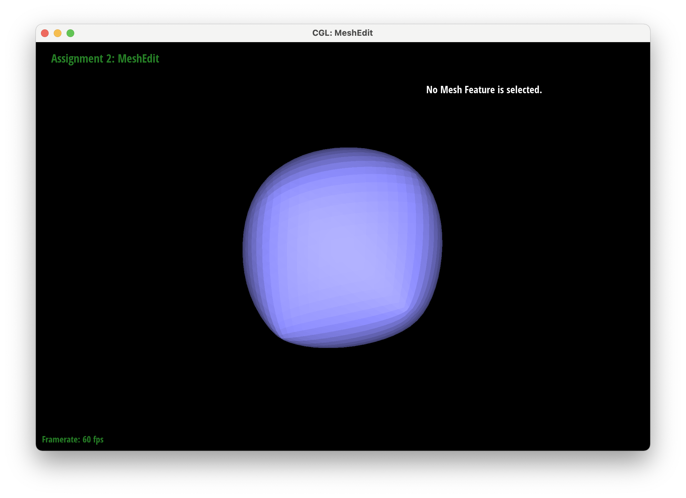

CS 184: Computer Graphics and Imaging, Spring 2022
Project 2: MeshEdit
Max Litster (3034017250) and Aidan Meyer (SID)
Overview
In this project, we implemented several rendering algorithms for triangle-based meshes to bring dynamic curves and surfaces to
our screens. As a whole, this bridged the gap from simple triangle rendering to more complex meshes like the teapot or tourus.
One of the largest takeaways from this project was the need to use sophisticated data structures to navigate the complexity of
such meshes. The half-edge in particular is capable of representing such complicated meshes, but is designed in such a way that
after surmounting the initial learning curve, one can navigate the meshes a relatively straightforward manner.
Section I: Bezier Curves and Surfaces
Part 1: Bezier curves with 1D de Casteljau subdivision
Here is an example 2x2 gridlike structure using an HTML table. Each tr is a row and each td is a
column in that row. You might find this useful for framing and showing your result images in an organized fashion.
|
Initial control points
|
Step 1
|
|
Step 2
|
Step 3
|
|
Step 4
|
Final curve
|
|
Adjustments to control points and `t`
|
Adjustments to control points and `t`
|
Part 2: Bezier surfaces with separable 1D de Casteljau subdivision
Bezier Surface for teapot
Section II: Sampling
Part 3: Average normals for half-edge meshes
|
Default shading
|
Weighted vertex normal shading
|
To compute the area-weighted vertex normal, we iterated through each face incident
to a vertex and computed its normal. The iteration was done by navigating half-edges.
We then summed the vertices and normalized the sum to get the area-weighted vertex norm,
which we returned as the norm of the desired vertex.
Part 4: Half-edge flip
Edge-flipping was implemented by explicitly reassigning each half-edge, face,
edge, and vertex to the flipped configuration shown in the spec. First, for
the incident triangles, we selected each vertex, edge, face, and half-edge,
and reassigned them to the new configuration. The implementation was a fairly
straightforward set of half-edge accesses and reassignments, however debugging
required meticulous sketching of the triangles pre and post-flip, and coding
explicit reassignments for each component of the triangle, even those that were
not changed. While this required some repetitive code, it made our debugging
journey fairly straightforward, as explicitly accessing and reassigning things
based on the diagram was fairly self-explanatory.
Part 5: Half-edge split
Edge-splitting was a bit more involved than edge-flipping, because we also had
to create new edges, half-edges, and a vertex midpoint.
Again, we explicitly reassigned each component of the triangle,
this time incorporating the new midpoint and corresponding new edges,
half-edges, and faces. Debugging was again relatively straightforward:
errors mostly arose from looking at how we may have incorrectly assigned
a particular vertex or edge. Our debugging journey mostly consisted of
scrutinizing our code to ensure that we correctly moved all of our pointers
/ triangle attributes to match the desired configuration.
Part 6: Loop subdivision for mesh upsampling
|
Initial Cube
|
Upsampling 1
|
|
Upsampling 2
|

Upsampling 3
|
|

Upsampling 4
|
Upsampling 5
|
Section III: Optional Extra Credit
If you are not participating in the optional mesh competition, don't worry about this section!
Part 7: Design your own mesh!
https://cal-cs184-student.github.io/sp22-project-webpages-malits/proj2/index.html